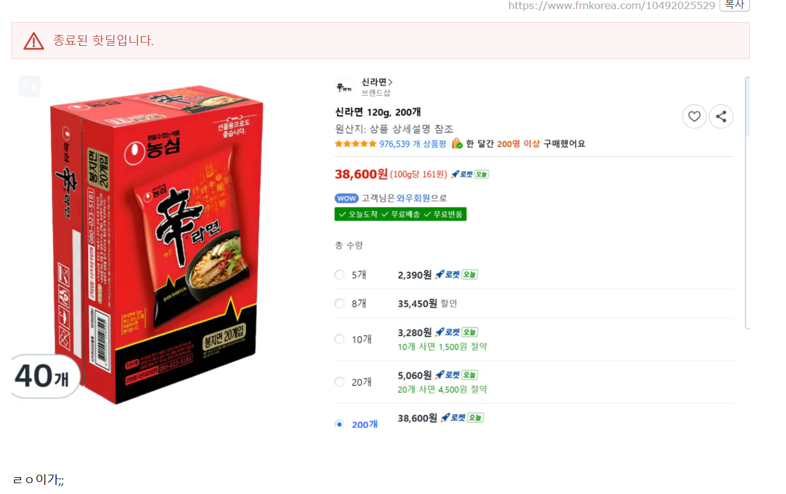
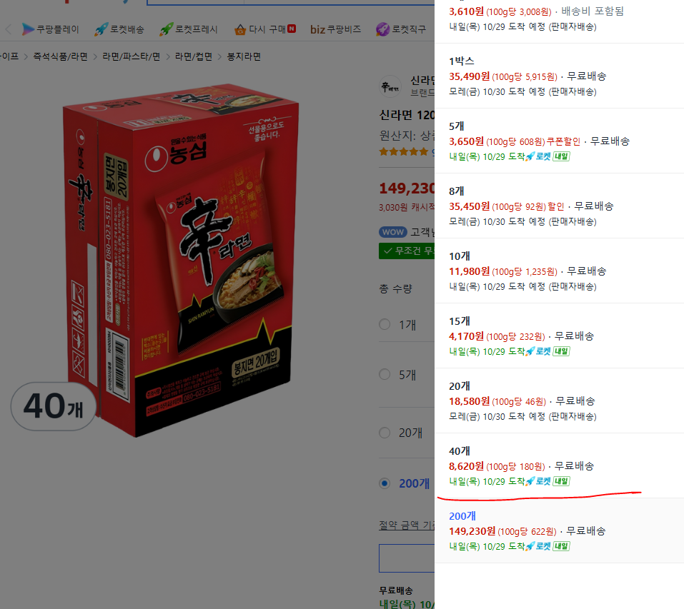
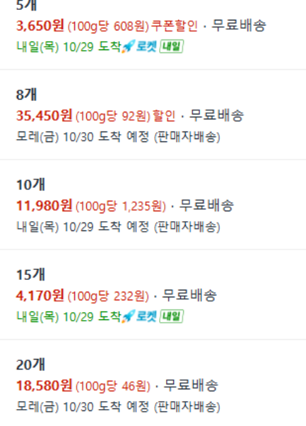
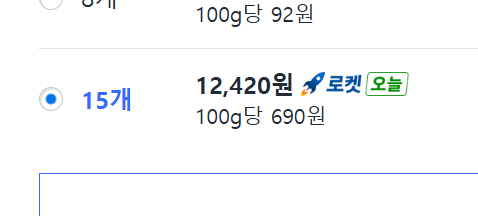
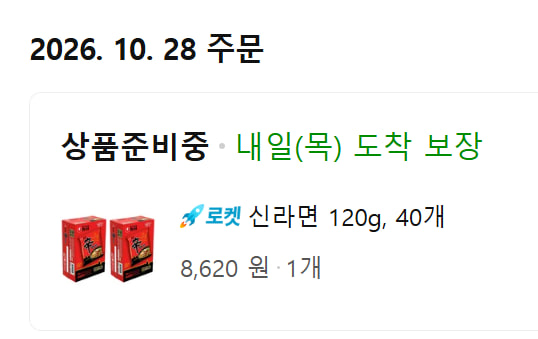
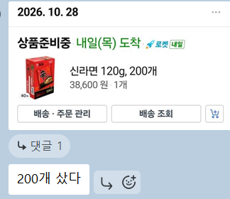

펨코에 올라왔다가 5분만에 컷남
나도 못 샀음
근데 상세옵션을 보니

몇분후: 어 40개 8620원은 살아있네? 개당 215.5원이다 ㄱㄱㄱ
라고 글 쓰는 와중에 이또한 칼같이 종료됨
그런데 자세히 봐라

15개 4170원이다
요시 달려라
하고 글 쓰는 와중에

가격 정상화됨
내가 좋은마음에서 퍼오려다 글쓰다가 늦었다 미안하다

물론 난 40개샀다 꺼어엌 미안하다

아는놈들중에 진짜 200개 산 놈들이 있는게 논란
난 15개만 선물하기 보내놓고 고민중 ㅋㅋ